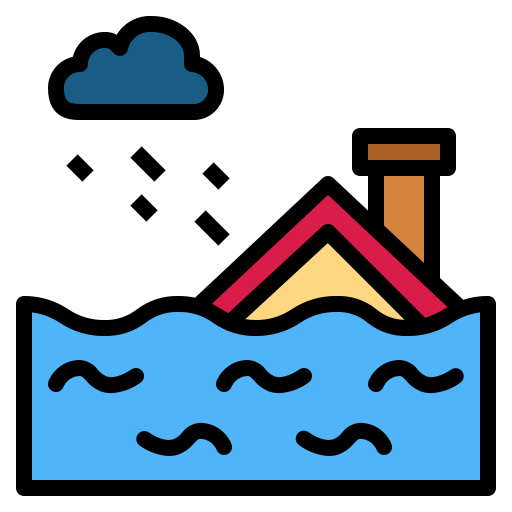

Sections
Sections  Schedule
Schedule  Announcements
Announcements  COVID protocols
COVID protocols  About Citadine
About Citadine  Languajes
Languajes  Go out
Go out Section 1 - FROM RAIN TO FLOOD
Moments before the flood. You can know 4 shocking cases and news on the TV at that moment.
access section 1
Section 2 - FOR LIFE AND LIMB
The worst time of the flood. You can access the testimonies of the 4 cases and a flood simulator.
access section 2

Section 3 - JUST RUBBLE AND MUD
You can look at the most impressive photos and see the photo album shared by the people themselves affected.
access section 3Section 4 - LARNINGS OF THE FLOOD
You can play with the Sandbox AR to explore the effect according to the type of relief. In addition, you can know more about urban floods and analyze other reasons as to why it floods these areas.
access section 4